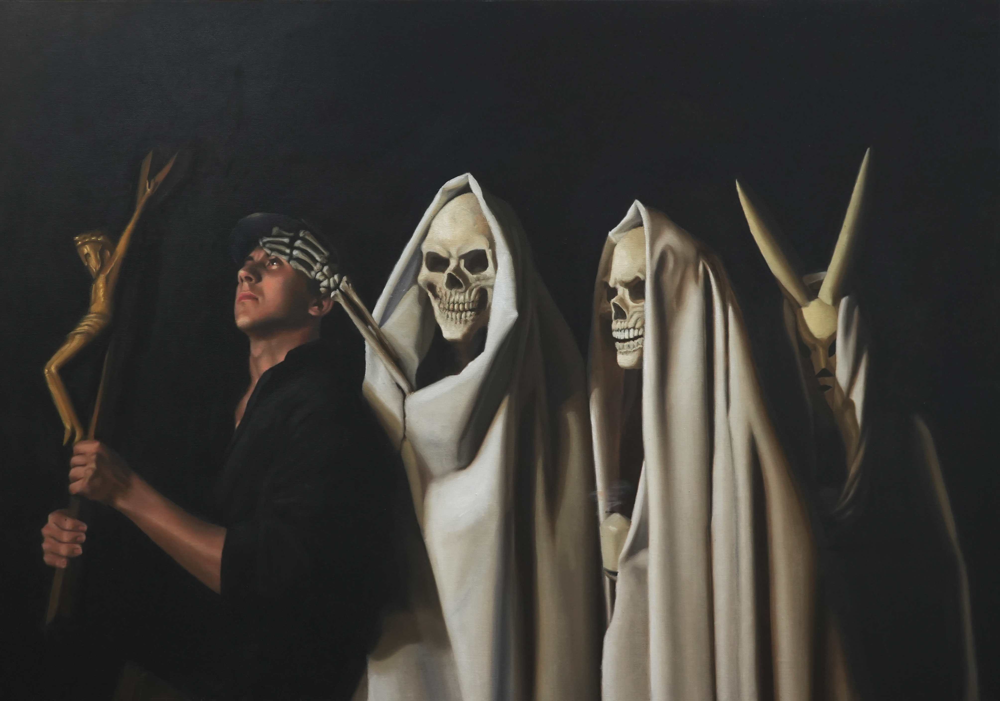
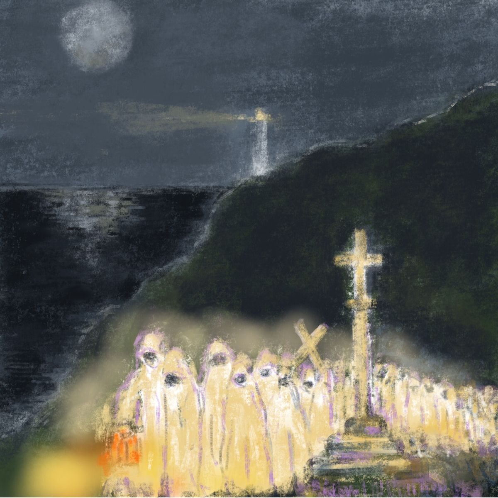
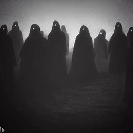

Mitos
A Santa Compaña




Ficha rápida do mito
- Nome: A Santa Compaña
- Outros nomes: Estadea, Huespeda, Procesión das Ánimas
- Que é? Unha procesión de almas en pena que percorre os camiños durante a noite.
- Como protexerse? Segundo a tradición, cun cruceiro, un círculo no chan ou rezando.
O mito en si
A Santa Compaña é, seguramente, a lenda máis coñecida de Galicia. Creo que non hai galego que non escoitase falar dela algunha vez. É tamén a lenda que máis respecto me dá.
Acordo que, cando era nena, daba igual quen sacase o tema. Sempre había alguén que coñecía a un veciño, a un tío, avo ou un coñecido que aseguraba tela visto. E claro, despois diso era imposible volver para casa de noite e durmir tranquila.
Tamén descubrín que a lenda está moi unida ao Camiño de Santiago. Non é casualidade que tantos relatos sitúen as aparicións en camiños, cruces e cruceiros, lugares polos que durante séculos pasaron milleiros de peregrinos. De feito, dise que os cruceiros tamén servían para protexer a quen se cruzaba coa procesión das ánimas.
A tradición conta que a Santa Compaña é unha procesión de almas en pena que percorre os camiños durante a noite. Van envoltas nunha néboa espesa, vestidas con túnicas e capuchas, portando velas acesas e rezando en silencio. Din que, antes de vela, o primeiro que se percibe é o cheiro a cera e que, ao seu paso, os cans empezan a ladrar mentres o resto dos animais calan de golpe.
Pero hai un detalle que sempre me pareceu o máis inquietante de todos. Á fronte da procesión non vai unha alma senón unha persoa viva. Alguén que leva unha cruz ou un caldeiro de auga bendita e que está condenado a acompañar a Compaña noite tras noite. Dise que esa persoa vai perdendo as forzas pouco a pouco, cada vez máis pálida e máis delgada, ata que consegue pasarlle a cruz a outra persoa que teña a mala sorte de cruzarse no seu camiño.
Tamén hai formas de librarse dela. Hai quen di que hai que debuxar un círculo no chan, outros que hai que deitarse boca abaixo ou simplemente rezar. E, se tes a sorte de atopar un cruceiro, din que é o mellor lugar para poñerse a salvo.
Ao final, creo que esa é a forza desta lenda. Non fai falta vela para que impresione. Abonda con medrar escoitando historias sobre ela para que, cando volves só por un camiño de noite, inevitablemente te acordes da Santa Compaña. Así que, se algunha noite vou por un camiño, empeza a levantarse a néboa e noto cheiro a cera darei media volta. Por se acaso.
Bibliografía
Colaboradores de Wikipedia. (2026b, mayo 12). Santa Compaña. Wikipedia, la Enciclopedia Libre.
https://es.wikipedia.org/wiki/Santa_Compa%C3%B1a
Pineda, F. (2021, 2 agosto). La Santa Compaña: La leyenda gallega más extendida. Vivecamino.
https://vivecamino.com/la-santa-compana-la-leyenda-gallega-mas-extendida-no-71/